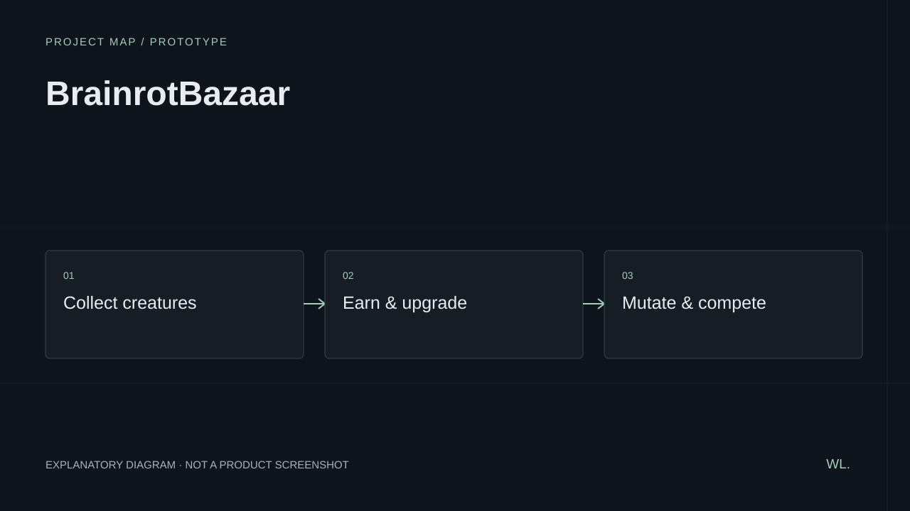

BrainrotBazaar
Original idle-tycoon/collector: buy creatures that print income, mutate them in a gacha lab, steal prized ones from rivals. World and assets generated fully in code.
Project map
1 view · select to enlarge

Project overview
Original idle-tycoon/collector: buy creatures that print income, mutate them in a gacha lab, steal prized ones from rivals. World and assets generated fully in code.
Project stage
Prototype. This is a record of the documented project; the review date above shows when its scope was last recorded.
Scope & status
A documented build or prototype is not necessarily a public release. This entry preserves the scope of the work at its last review.